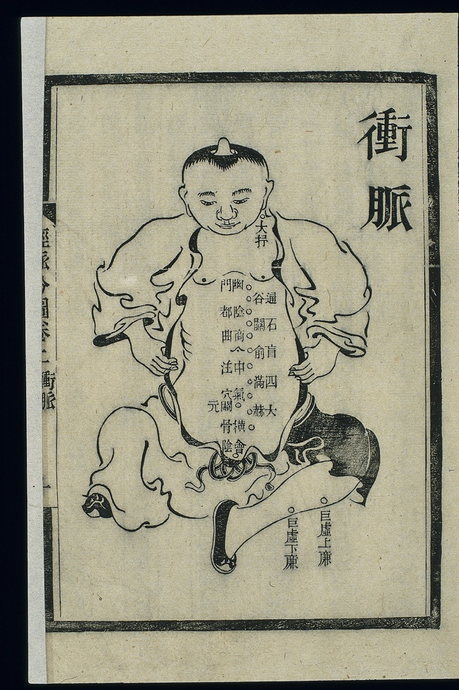

十二正经与奇经八脉
冲脉

循行概述
起于胞中（传统表述），出会阴，与肾经并行上腹胸；另有支脉沿脊柱内、下肢内侧及足部循行。具体支路在经典与教材间有表述差异。
传统功能与联系
称“十二经脉之海”或“血海”，传统上调节十二经气血，并联系生殖、月经及腹胸。无独立穴位序列。
主要穴位（学习清单）
- 公孙 SP4（八脉交会穴）
- 内关 PC6（配穴）；会阴 CV1
- 气冲 ST30
- 横骨 KI11
- 大赫 KI12
- 气穴 KI13
- 四满 KI14
- 中注 KI15
- 肓俞 KI16
- 商曲 KI17
- 石关 KI18
- 阴都 KI19
- 通谷 KI20
- 幽门 KI21（代表性交会穴）
此清单收录常用或定位意义突出的穴位，并非该经全部穴位，也不是处方。穴名、代码及定位应以采用的国家标准或教材版本核对。
Google AI Overview（用户整理）
以下内容由用户于 2026-10-03 从 Google AI Overview 整理粘贴，保留原链接与编号。它可能包含错误、来源质量差异或未经充分验证的医疗主张；仅供对照学习，不作为诊断、治疗或自我针灸建议。
冲脉是人体奇经八脉之一，被称为“十二经脉之海”和“血海”，具有调节全身气血、主司生殖生育的重要功能。 [1, 2]
核心称号与地位
- 十二经脉之海：汇聚并调节十二正经及五脏六腑的气血。
- 血海（血室）：起于胞中，与女性月经、胎孕及男女生殖机能密切相关。 [1, 2, 3]
循行路线
- 起点：起于小腹内（胞中），下出于会阴部。
- 主干道：与足少阴肾经等经脉并行，挟脐上行，散入胸中，上达咽喉，环绕口唇。
- 分支：分出支脉沿下肢内侧下行至足部，以及向后通于脊柱。 [2, 3, 4]
主要生理功能
- 气血总仓库：当脏腑经脉气血有余时负责涵蓄，不足时进行灌注补充。
- 主司生殖：促使女子月事以时下、男子精气充盛，决定生育能力与第二性征。
- 调节气机：协调肝、肾、胃等脏腑的气机升降。 [1, 3, 5]
如果你想进一步了解，可以告诉我：
- 你想了解冲脉的具体保健调理方法（如穴位按揉、艾灸等）？
- 还是想了解某种特定的身体不适症状（如气血逆冲、月经不调等）？
记忆任务
- 用一句话复述起点、主干方向和终点。
- 在人体轮廓上标出经脉所在的前、中、后或内、外侧。
- 从清单中先记原穴、络穴、郄穴、五输穴和常见交会穴，再补充其他穴位。
学习与安全边界：经络、功能和主治均按传统理论表述，不等同于现代解剖结构或已证实机制。穴位列表用于识记，不提供自我针刺指导；针刺可能导致感染、出血、气胸或其他损伤，应由符合当地资质要求的专业人员实施。